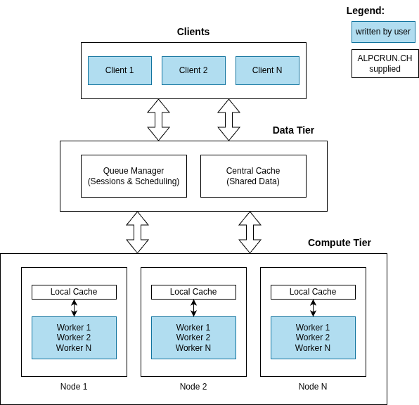

Architecture Overview¶
ALPCRUN.CH is designed as a cloud-native, microservices-based HPC middleware with a focus on scalability, reliability, and performance.
Design Principles¶
1. Streaming-First Architecture¶
All communication between clients, queue manager, and workers uses bidirectional gRPC streaming. This design choice provides:
- Low latency: No request/response overhead for each task
- High throughput: Continuous data flow without connection overhead
- Natural backpressure: Stream flow control prevents overload
- Efficient batching: Multiple tasks/results in single network operations
2. Queue-Based Task Distribution¶
ALPCRUN.CH uses a centralized queue manager with per-session queues:
- Task queues: Pending work for each session
- Result queues: Completed work awaiting client collection
- Dead letter queues: Failed tasks for inspection and retry
This architecture enables:
- Fair scheduling: Priority-based task distribution
- Session isolation: Independent workload contexts
- Worker flexibility: Workers can bind/unbind from sessions dynamically
3. Distributed Caching¶
The two-tier cache architecture (central + node-level) provides:
- Shared data distribution: Common data replicated to all workers
- Reduced network traffic: Local node caches minimize central cache requests
- Versioned updates: Track data changes with update levels
- TTL-based expiration: Automatic cleanup of stale data
System Architecture¶
3-Tier architecture with the middleware providing the low-latency interfacing. User written clients and worker services can use the gRPC language bindings provided with the SDK for easy integration.

Core Components¶
Queue Manager¶
Purpose: Central coordinator for session management and task distribution
Responsibilities: - Session lifecycle management (create, update, close) - Task and result queue management per session - Worker registration and instruction (BIND/UNBIND) - Priority-based scheduling - Dead letter queue handling
Interfaces: - gRPC service on port 1337 - Prometheus metrics on port 8080
Key Features: - Multiple queue implementations (priority, lock-free, speed-test) - Configurable buffer sizes - Idle timeout handling - Worker limits per session
Central Cache¶
Purpose: Centralized storage for session-shared data
Responsibilities: - Store and retrieve shared data - Version tracking (update levels) - TTL-based expiration - Atomic updates
Interfaces: - gRPC service on port 2337 - Prometheus metrics on port 8081
Key Features: - In-memory storage for low latency - Configurable maximum TTL - Periodic cleanup of expired data - Thread-safe concurrent access
Node Cache¶
Purpose: Local pull-through cache for reduced network overhead
Responsibilities: - Cache shared data locally on each compute node - Proxy requests to central cache on cache miss - Maintain consistency with central cache - Reduce central cache load
Interfaces: - gRPC service on port 3337 - Prometheus metrics on port 8082
Deployment: - Typically deployed as a Kubernetes DaemonSet - One instance per compute node - Workers connect to local node cache
Data Flow¶
Task Submission Flow¶
- Client creates a session with the queue manager
- Client optionally uploads shared data to central cache
- Client opens a bidirectional stream to queue manager
- Client sends task batches to the stream
- Queue Manager enqueues tasks in session's task queue
- Queue Manager schedules workers to process the session
- Worker receives task batches from the stream
- Worker fetches shared data from node/central cache if needed
- Worker processes tasks and sends result batches back
- Queue Manager enqueues results in session's result queue
- Client receives result batches from the stream
Worker Binding Flow¶
- Worker connects to queue manager via
WorkerUpdatestream - Queue Manager assigns a unique worker ID (via response header)
- Worker sends idle state updates periodically
- Queue Manager sends BIND instruction when work is available
- Worker opens
WorkerStreamto the specified session - Worker processes tasks until session closes or idle timeout
- Queue Manager sends UNBIND instruction
- Worker returns to idle state
Shared Data Flow¶
- Client uploads data to central cache with session ID and update level
- Client sends task batches with
use_shared_data=trueflag - Worker receives task batch with shared data reference
- Worker requests data from node cache (local)
- Node Cache checks local storage:
- Cache hit: Returns data immediately
- Cache miss: Fetches from central cache and caches locally
- Worker uses shared data for task processing
Scalability¶
Horizontal Scaling¶
All components are designed for horizontal scalability:
Queue Manager: - Can run multiple instances behind a load balancer - Session affinity not required (stateless except in-memory queues) - For production, consider external queue storage (future enhancement)
Central Cache: - Single instance typically sufficient - Can be replicated with consistent hashing (future enhancement) - Backed by distributed storage for high availability
Node Cache: - Automatically scales with cluster size (DaemonSet) - No coordination required between instances
Workers: - Fully stateless and horizontally scalable - Add/remove workers dynamically without disruption - Auto-scaling based on queue depth
Performance Characteristics¶
Throughput: - Queue Manager: 10,000+ tasks/sec per session - Central Cache: 5,000+ operations/sec - Node Cache: 50,000+ operations/sec (cache hits)
Latency: - Task submission to worker: <10ms (queue + network) - Cache lookup (hit): <1ms (node cache) - Cache lookup (miss): <5ms (central cache)
Capacity: - Sessions per queue manager: 1,000+ - Workers per session: 10,000+ - Concurrent tasks: Limited by worker capacity
Reliability and Fault Tolerance¶
Dead Letter Queues¶
Failed tasks are automatically moved to dead letter queues:
- Clients can retrieve dead letter batches via
ClientStreamDeadLetters - Inspect errors and optionally retry
- Prevents silent data loss
Session Cleanup¶
Automatic cleanup on client disconnect (optional):
- Set
cleanup_on_client_exit=truein session attributes - Queue manager removes session and associated data
- Prevents resource leaks
Worker Failure Handling¶
If a worker crashes or disconnects:
- In-flight tasks are automatically re-queued
- Queue manager detects disconnect via stream error
- New worker can pick up tasks immediately
Network Resilience¶
gRPC streams automatically handle:
- Connection keepalives
- Reconnection with backoff
- Flow control and backpressure
Security¶
Authentication¶
API key-based authentication:
- Required for all client and worker connections
- Passed via gRPC metadata header
- Bcrypt-hashed keys for production
See Authentication Reference for details.
Transport Security¶
TLS/mTLS support:
- Configurable per service
- Certificate-based mutual authentication
- Recommended for production deployments
Network Policies¶
Kubernetes network policies recommended:
- Restrict queue manager access to authorized pods
- Isolate cache services from external traffic
- Worker-to-cache communication only
Monitoring and Observability¶
Metrics¶
All services expose Prometheus metrics:
- Connection counts (clients, workers)
- Queue depths (tasks, results, dead letters)
- Task/result throughput rates
- Cache hit/miss rates
- gRPC call latencies and error rates
Logging¶
Structured logging with configurable levels:
- JSON format for machine parsing
- Request ID propagation for tracing
- Source file and line numbers (optional)
- Pretty printing for development
Profiling¶
Built-in pprof support:
- CPU and memory profiling
- Goroutine analysis
- Mutex contention profiling
- Enabled via
--pprofflag
Next Steps¶
- Components: Detailed component documentation
- Data Flow: Deep dive into data flow patterns
- API Reference: Complete API documentation